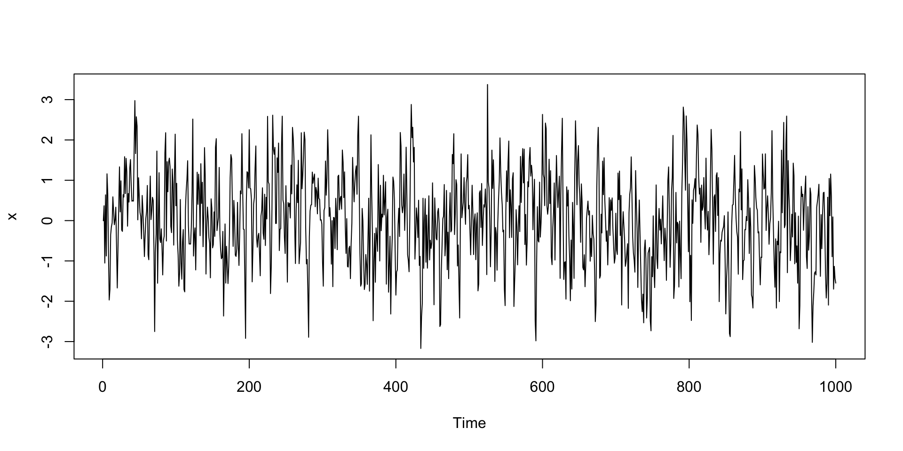

Processos autoregressivos - AR(p): Parte II
ME607 - Séries Temporais
ctrucios@unicamp.br
Instituto de Matemática, Estatística e Computação Científica (IMECC),
Universidade Estadual de Campinas (UNICAMP).
Introdução
Introdução
- Na aula anterior os modelos AR(p) foram apresentados.
- Calculamos \(\gamma_0\), \(\gamma_k\), \(\rho_k\) e \(\phi_{kk}\) para os processos AR(1), AR(2) e AR(p).
- Foram também aprensentadas condições de estacionariedade.
- Discutimos como identificar o processo através da função de autocorrelação (ACF) e função de autocorrelação parcial (PACF).
Até agora tudo tem sido calculado e utilizado o modelo teórico (i.e. assumindo que conhecemos os verdadeiros valores dos parâmetros). Na prática os parâmetros nunca são observados, precisando ser estimados. Na aula de hoje aprenderemos como estimar estes parâmetros.
Método dos momentos (MM)
Método dos momentos (MM)
- É o método mais simples.
- Consiste em substituir, nas equações que relacionam as autocorrelações com os parâmetros do modelo, os momentos teóricos pelos momentos amostrais.
Seja o modelo AR(p),
\[Y_t = \mu + \phi_1 Y_{t-1} + \phi_2 Y_{t-2} + \cdots + \phi_p Y_{t-p} + \epsilon_t, \quad \epsilon_t \sim RB(0, \sigma^2_{\epsilon}).\]
- \(\mu = \mathbb{E}(Y_t)\) e \(\sigma^2 = \mathbb{V}(Y_t)\) são estimados pela média e variância amostral, respectivamente.
- Para estimar \(\phi_1, \cdots, \phi_p\), utilizamos o fato de que (ver slide da aula anterior): \[\rho_k = \phi_1 \rho_{k-1} + \phi_2 \rho_{k-2} + \cdots + \phi_p\rho_{k-p}, \quad k \geq 1\]
Método dos momentos (MM)
Utilizando a relação anterior, obtemos as equações de Yule-Walker:
\[\begin{align*} \rho_1 = & \phi_1 + \phi_2 \rho_1 + \phi_3 \rho_2 + \cdots + \phi_p \rho_{p-1} \\ \rho_2 = & \phi_1 \rho_1+ \phi_2 + \phi_3 \rho_1 + \cdots + \phi_p \rho_{p-2} \\ \vdots & \\ \rho_p = & \phi_1 \rho_{p-1}+ \phi_2 \rho_{p-1} + \phi_3 \rho_{p-3} + \cdots + \phi_p\\ \end{align*}\]
De forma matricial,
\[\begin{bmatrix} \rho_1 \\ \rho_2 \\ \vdots \\ \rho_p \end{bmatrix} = \begin{bmatrix} 1 & \rho_1 & \rho_2 & \cdots & \rho_{p-1}\\ \rho_1 & 1 & \rho_1 & \cdots & \rho_{p-2}\\ \vdots \\ \rho_{p-1} & \rho_{p-2} & \rho_{p-3} & \cdots & 1\\ \end{bmatrix} \times \begin{bmatrix} \phi_1 \\ \phi_2 \\ \vdots \\ \phi_p \end{bmatrix} \]
Método dos momentos (MM)
Substituindo as autocorrelações teóricas pelas amostrais
\[\begin{bmatrix} \hat{\phi}_1 \\ \hat{\phi}_2 \\ \vdots \\ \hat{\phi}_p \end{bmatrix} = \begin{bmatrix} 1 & \hat{\rho}_1 & \hat{\rho}_2 & \cdots & \hat{\rho}_{p-1}\\ \hat{\rho}_1 & 1 & \hat{\rho}_1 & \cdots & \hat{\rho}_{p-2}\\ \vdots \\ \hat{\rho}_{p-1} & \hat{\rho}_{p-2} & \hat{\rho}_{p-3} & \cdots & 1\\ \end{bmatrix}^{-1} \begin{bmatrix} \hat{\rho}_1 \\ \hat{\rho}_2 \\ \vdots \\ \hat{\rho}_p \end{bmatrix}\]
Estes estimadores são chamados de estimadores Yule-Walker.
Método dos momentos (MM)
Note que (ver slide da aula anterior) \[\gamma_0 = \phi_1 \underbrace{\gamma_1}_{\rho_1 \gamma_0} + \phi_2 \underbrace{\gamma_2}_{\rho_2 \gamma_0} + \cdots+ \phi_p \underbrace{\gamma_p}_{\rho_p \gamma_0} + \sigma^2_{\epsilon},\] substituindo \(\phi_k\) por \(\hat{\phi}_k\), \(\rho_k\) por \(\hat{\rho}_k\) e \(\gamma_0\) por \(\hat{\gamma}_0\), temos, \[\hat{\sigma}^2_{\epsilon} = \hat{\gamma}_0(1 - \hat{\phi}_1 \hat{\rho}_1 - \hat{\phi}_2 \hat{\rho}_2 - \cdots - \hat{\phi}_p \hat{\rho}_p)\]
Método dos momentos (MM)
Exemplo:
Seja o modelo AR(1): \[Y_t = \mu + \phi Y_{t-1} + \epsilon_t, \epsilon_t \sim RB(0, \sigma^2_{\epsilon}).\]
Estimar os parâmetros através do método dos momentos.
Método dos momentos (MM)
Método dos momentos (MM)
Qual o comportamento de \(\hat{\phi}\)?
Método dos momentos (MM)
Teorema
Para um processo AR(p), \[\sqrt{n}(\hat{\phi}-\phi) \rightarrow_D N(0, \sigma^2_{\epsilon} \Gamma^{-1}) \quad e \quad \hat{\sigma}^2_{\epsilon} \rightarrow_p \sigma^2_{\epsilon},\] em que \(\Gamma = [\gamma(i-j)]_{i, j = 1}^p\)
Para \(k > p,\) \[\sqrt{n}\hat{\phi}_{kk} \rightarrow_D N(0,1)\]
Note que se substituirmos \(\sigma^2_{\epsilon}\) por \(\hat{\sigma}^2_{\epsilon}\) e \(\Gamma\) por \(\hat{\Gamma}\), temos uma metodo para obter intervalos (regiões) de confiança para \(\phi\).
Método dos momentos (MM)
Exemplo [Shumway and Stoffer, 2000]
Seja um AR(2) da forma: \[Y_t = 1.5 Y_{t-1} - 0.75 Y_{t-2} + \epsilon_t, \quad \epsilon_t \sim RD(0,1).\]
Simulamos uma série de tamanho \(n = 144\) com as caracteristicas descritas acima e obtemos \(\hat{\gamma}_0 = 8.434\), \(\hat{\rho}_1 = 0.834\) e \(\hat{\rho}_2 = 0.476\).
- Estimar \(\phi_1\) e \(\phi_2\) pelo MM.
- Estimar \(\sigma^2_{\epsilon}\).
- Calcular IC para \(\phi_1\) e \(\phi_2\).
Método dos momentos (MM)
\(\hat{\phi}_1\) e \(\hat{\phi}_2\)
M1 <- matrix(c(1, 0.834, 0.834, 1), ncol = 2)
M2 <- matrix(c(0.834, 0.476), ncol = 1)
phi_hat <- solve(M1) %*% M2
phi_hat [,1]
[1,] 1.4354561
[2,] -0.7211704\(\hat{\sigma}^2_{\epsilon}\)
Método dos momentos (MM)
IC:
Método dos momentos (MM)
Desafio: [Pode ser feito em duplas ou individualmentem]
- Implementar o método dos momentos para um AR(p). A implementação deve ser geral o suficiente como para que o próprio usuário introduza o valor de \(p\) desejado. (+0.25 na \(P_1\)).
- Se além dos \(\hat{\phi}\)s, a função também devolver os intervalos de confiança 95% para os \(\phi\)s, ganhará +0.25 pontos.
Máxima verossimilhança (MV)
Máxima verossimilhança (MV)
O método de MV requer que saibamos a distribuição de \(\epsilon_t\). Assumindo normalidade1, temos:
\[Y_t = \mu + \phi_1 Y_{t-1} + \phi_2 Y_{t-2} + \cdots + \phi_p Y_{t-p} + \epsilon_t, \quad \epsilon_t \sim N(0, \sigma^2_{\epsilon})\]
Como \(\epsilon_1, \cdots, \epsilon_n\) são iid, sua distribuição conjunta é dada por:
\[f(\epsilon_1, \epsilon_2, \cdots, \epsilon_n| \Theta) = \displaystyle \prod_{i = 1}^n \dfrac{\exp(-\epsilon_i^2/2\sigma^2_{\epsilon})}{\sqrt{2 \pi \sigma^2_{\epsilon}}}= \dfrac{\exp \Big(- \dfrac{1}{2\sigma^2_{\epsilon}} \displaystyle \sum_{i = 1}^n \epsilon_i^2 \Big)}{(2 \pi \sigma^2_{\epsilon})^{n/2}},\] em que \(\Theta = (\mu, \sigma^2_{\epsilon}, \phi_1, \cdots, \phi_p)\)
Máxima verossimilhança (MV)
Note que \(\epsilon_i = Y_i - \mu - \phi_1 Y_{i-1} - \cdots - \phi_p Y_{i-p}\), então
\[f(\epsilon_1, \epsilon_2, \cdots, \epsilon_n| \Theta) = \dfrac{\exp \Big(- \dfrac{1}{2\sigma^2_{\epsilon}} \displaystyle \sum_{i = 1}^n (Y_i - \mu - \phi_1 Y_{i-1} - \cdots - \phi_p Y_{i-p})^2 \Big)}{(2 \pi \sigma^2_{\epsilon})^{n/2}},\]
Máxima verossimilhança (MV) condicional
Para poder estimar os parâmetros por máxima versomilhança, precisamos conhecer \(y_1, \cdots, y_n\), mas também (assumir que conhecemos) \(y_0, y_{-1}, \cdots, y_{-p}\). Assim, a verosimilhança é dada por:
\[L(\mu, \sigma^2_{\epsilon}, \phi_1, \cdots, \phi_p | y_{-p}, \cdots, y_n) = \dfrac{\exp \Big(- \dfrac{1}{2\sigma^2_{\epsilon}} \displaystyle \sum_{i = 1}^n (y_i - \mu - \phi_1 y_{i-1} - \cdots - \phi_p y_{i-p})^2 \Big)}{(2 \pi \sigma^2_{\epsilon})^{n/2}}\]
E a log-verosimilhança é dada por
\[l(\mu, \sigma^2_{\epsilon}, \phi_1, \cdots, \phi_p | y_{-p}, \cdots, y_n) = - \dfrac{n}{2} \log(2 \pi \sigma^2_{\epsilon}) - \dfrac{1}{2\sigma^2_{\epsilon}} \displaystyle \sum_{i = 1}^n (y_i - \mu - \phi_1 y_{i-1} - \cdots - \phi_p y_{i-p})^2.\]
Máxima verossimilhança (MV) condicional
Assim, os estimadores de máxima verossimilhança (EMV), \(\hat{\Theta} = (\hat{\mu}, \hat{\sigma}^2_{\epsilon}, \hat{\phi}_1, \cdots, \hat{\phi}_p)\), são aqueles que maximizam \[l(\Theta | y_{-p}, \cdots, y_n),\] ou , equivalentemente, os valores que minimizam \[-l(\Theta | y_{-p}, \cdots, y_n).\]
\[-l(\Theta| y_{-p}, \cdots, y_n) = \dfrac{n}{2} \log(2 \pi \sigma^2_{\epsilon}) + \dfrac{1}{2\sigma^2_{\epsilon}} \displaystyle \underbrace{\sum_{i = 1}^n (y_i - \mu - \phi_1 y_{i-1} - \cdots - \phi_p y_{i-p})^2}_{S(\mu, \phi_1, \cdots, \phi_p |y)}.\]
Para um \(\sigma^2_{\epsilon}\) qualquer, \(\hat{\mu}\) e \(\hat{\phi}s\) são obtidos minimizando \(S(\mu, \phi_1, \cdots, \phi_p |y_{-p}, \cdots, y_n).\)
Máxima verossimilhança (MV) condicional
Uma vez obtidos \(\hat{\mu}\) e \(\hat{\phi}s\), minimizamos \(-l(\sigma^2_{\epsilon}| \hat{\mu}, \hat{\phi}s, y)\). Então, \[\hat{\sigma}^2_{\epsilon} = \dfrac{S(\hat{\mu}, \hat{\phi}_1, \cdots, \hat{\phi_p}|y_{-p}, \cdots, y_n)}{n}.\]
- Na prática, para podermos implementar o método, precisamos os valores \(y_0, y_{-1}, \cdots, y_{-p}\) (valores que não temos!).
- Uma solução é fazer \(y_{0} = \cdots = y_{-p} = \bar{y}\)
- Outra alternativa é calcular a verosimilhança a partir de \(i \geq p + 1\).
- Este método, que condiciona nos valores iniciais, é chamado de máxima verossimilhança condicional.
- Quando \(\epsilon_t \sim N(0, \sigma^2_{\epsilon})\), os EMV para \(\mu, \phi_1, \cdots, \phi_p\) coincidem com os estimadores obtidos pelo método de mínimo quadrados condicional.
Máxima verossimilhança (MV) condicional
Implementação 1:
Code
mv_ar <- function(x, p) {
mu <- mean(x)
n <- length(x)
X <- matrix(mu, ncol = p + 1, nrow = n)
Y <- matrix(x, ncol = 1)
X[, 1] <- 1
for (i in 2:(p + 1)) {
X[i:n, i] <- x[1:(n - i + 1)]
}
betas <- solve(t(X) %*% X) %*% t(X) %*% Y
sigma2_e <- sum((Y - X %*% betas)^2) / n
parametros <- c(betas, sigma2_e)
return(parametros)
}Implementação 2:
Code
mv_ar_opt2 <- function(x, p) {
mu <- mean(x)
n <- length(x)
X <- matrix(mu, ncol = p + 1, nrow = n)
Y <- matrix(x, ncol = 1)
X[, 1] <- 1
for (i in 2:(p + 1)) {
X[i:n, i] <- x[1:(n - i + 1)]
}
# Calculamos a partir de p + 1
X <- X[-c(1:p), ]
Y <- Y[-c(1:p), ]
betas <- solve(t(X) %*% X) %*% t(X) %*% Y
sigma2_e <- sum((Y - X %*% betas)^2) / nrow(X)
parametros <- c(betas, sigma2_e)
return(parametros)
}Máxima verossimilhança (MV) condicional
Dados simulados:
Máxima verossimilhança (MV) condicional
Implementação 1:
Máxima verossimilhança (MV) condicional
Code
[1] 0.01902448 0.46692670Series: x
Model: AR(1) w/ mean
Coefficients:
constant ar1
0.019 0.4669
sigma^2 estimated as 0.9941
AIC = -241.38 AICc = -241.36 BIC = -231.56Máxima verossimilhança (MV) condicional
Call:
tseries::arma(x = x, order = c(1, 0), include.intercept = TRUE)
Model:
ARMA(1,0)
Residuals:
Min 1Q Median 3Q Max
-2.98583 -0.66067 0.01292 0.67944 3.98076
Coefficient(s):
Estimate Std. Error t value Pr(>|t|)
ar1 0.46691 0.02800 16.676 <2e-16 ***
intercept 0.01915 0.03155 0.607 0.544
---
Signif. codes: 0 '***' 0.001 '**' 0.01 '*' 0.05 '.' 0.1 ' ' 1
Fit:
sigma^2 estimated as 0.9951, Conditional Sum-of-Squares = 993.13, AIC = 2836.98Máxima verossimilhança (MV) condicional
O método de MV condicional, tem as mesma propriedades assintóticas do que o método de MV exata.
Teorema
[Ver Brockwell and Davis, 1991] Para um processo AR(p), \[\hat{\phi} \rightarrow N(\phi, n^{-1} \mathbb{V}(\phi)),\] em que \(\mathbb{V}(\phi) = \sigma^2_{\epsilon} \Gamma^{-1}.\) Ou seja, assintóticamente, tem a mesma distribuição do que o estimador Yule-Walker. Pode-se provar que:
- Para um AR(1): \(\mathbb{V} (\phi_1) \approx \dfrac{1-\phi^2_1}{n}\)
- Para um AR(2): \(\mathbb{V} (\phi_1) = \mathbb{V} (\phi_2)\approx \dfrac{1-\phi_2^2}{n}\)
Note que se substituirmos \(\sigma^2_{\epsilon}\) por \(\hat{\sigma}^2_{\epsilon}\) e \(\Gamma\) por \(\hat{\Gamma}\), temos uma metodo para obter intervalos (regiões) de confiança para \(\phi\).
Outros métodos de estimação
Além dos métodos descritos, existem outros métodos de estimação. Alguns deles serão vistos nas próximas aulas (a medida que formos apresenando outros modelos de séries temporais) e outros serão apenas mencionados para futuras referências.
Referências
- Brockwell, P. J., & Davis, R. A. (1991). Time series: Theory and Methods. Springer.
- Morettin, P.A, & Toloi, C.M.C. (2006). Análise de Séries Temporais, 2ed, Blucher. Capítulo 7.
- Peña, D. (2005). Análisis de series temporales. Alianza. Capítulo 4.
- Wei, W. (2005). Time Series Analysis: Univariate and Multivariate Methods, 2ed, Pearson. Chapter 7.

Carlos Trucíos (IMECC/UNICAMP) | ME607 - Séries Temporais | ctruciosm.github.io